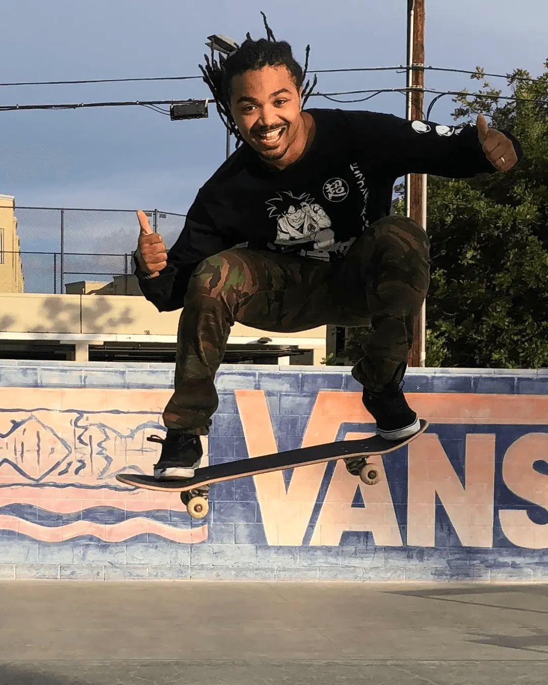

About Me
— Richard P. Feynman
Brief Bio
Dr. Devontae Baxter is a Future Faculty in the Physical Sciences (FFPS) Postdoctoral Fellow at Princeton University investigating the intricate interplay between galaxies and their local and large-scale environments across cosmic time. He completed his undergraduate studies at the Georgia Institute of Technology, majoring in Physics with a minor in Spanish. He earned his PhD in Physics at UC Irvine under the supervision of Professor Michael Cooper, where his thesis focused on merging machine learning and statistical techniques with multi-wavelength observations and cosmological simulations to elucidate the physical mechanisms driving the suppression of star formation in galaxy groups and clusters.
The Skateboarding Astrophysicist
Born and raised in Atlanta, Georgia, my passions for science and skateboarding ignited during my early teenage years. Before aspiring to explore the cosmos, my dream was to travel the globe as a professional skateboarder.
While my career path shifted toward the stars, the grit, creativity, and persistence I learned from skateboarding shaped how I tackle complex physics problems. Today, I’m fortunate to explore the cosmos with some of the most magnificent telescopes ever created, while still finding time to defy gravity on my skateboard.

OllieAcademic Journey
Hobbies and Interests
Outside of research, teaching, and mentoring, I find joy in a variety of activities that keep me inspired and grounded:
Skateboarding
My favorite way to clear my mind and push my physical limits. You can check out some of my skate clips on YouTube and Instagram.
Languages
My passion for foreign languages stems from growing up around vibrant immigrant communities. Being multilingual has given me a deep appreciation for diverse cultures and customs, and I'm constantly learning new languages through podcasts, videos, books, and good ol' Duolingo.
Anime & Sci-Fi
I love keeping up with my favorite manga and anime, as well as exploring fantastical worlds in sci-fi literature, TV shows, and movies. I am currently hooked on One Piece, and my favorite sci-fi book series is The Hitchhiker's Guide to the Galaxy.